用户手册
本手册适用于 MuseScore 0.9.2 或更新的版本。如果想参与本手册的翻译与改进，请到MuseScore 文档论坛 发贴申请成为用户手册的贡献者。
开始
本章节辅助用户的安装和第一次运行 MuseScore，还将告诉用户如何创建一个新的乐谱。
安装
Windows
在 MuseScore 网站的下载 页面找到 Windows 的安装包，点击下载。你的网络浏览器会提示你确认下载文件，点击“保存文件”。
当下载完成时，鼠标双击该文件开始安装。Windows 可能会弹出一个安全对话框询问是否运行软件，点击“运行”以继续。
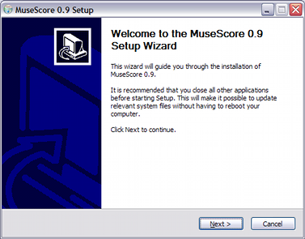
安装程序前建议你关闭所有其它程序再继续，关闭其它程序后点击“下一步”。
安装程序向导将显示自由软件协议，点击“我同意”到下一步。
下一步确认 MuseScore 的安装位置，如果你要安装一个新的版本同时还需要保留旧版本，请改变安装目录，否则直接点击“下一步”。
接下来确认将出现在 Windows 开始菜单中的目录名称，点击“安装”继续。
安装程序会花几分钟时间完成文件安装和配置，最后点击“完成”退出安装程序。
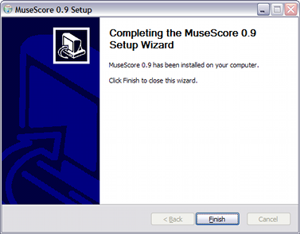
启动 MuseScore
要启动 MuseScore，点击菜单 开始 → 所有程序 → MuseScore 0.9 → MuseScore.
MuseScore 程序启动并打开演示曲，该曲子演示了 MuseScore 的一些功能。接下来你可能会 创建一份新乐谱。
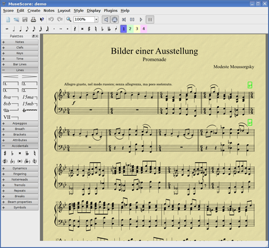
MacOSX
安装
在 下载 页面找到 Mac 下的 dmg 安装文件，点击文件链接开始下载。下载结束后， dmg 文件会自动装载，桌面上出现 "MuseScore-0.9.6" 安装程序。
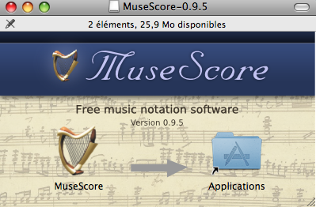
拖拽 MuseScore 图标到 [应用程序] 目录，如果你不是系统管理员，操作系统会向你询问用户密码。
现在你可以从[应用程序] 或 [SpotLight] 中启动 MuseScore了。
卸载
在 [应用程序] 目录中删除 MuseScore 即可。
Linux
请参考 下载 页面中关于 Linux 的部分，在Debian，Ubuntu，Fedora 和 PCLinuxOS 中已经提供了安装包，其它发行版可能需要你从源代码方式自行编辑并安装。针对 Fedora 的安装指导见 下面.
Fedora
- 导入 GPG 键：
su rpm --import http://prereleases.musescore.org/linux/Fedora/RPM-GPG-KEY-Seve
- 到 下载 页面，点击 Fedora 版本链接，选择适合你的系统体系的 rpm 安装包。
- 参照你操作系统的体系，使用下列命令之一安装 MuseScore
- 针对 i386
su yum localinstall musescore-0.9.4-1.fc10.i386.rpm
- 针对 x86_64
su yum localinstall musescore-0.9.4-1.fc10.x86_64.rpm
- 针对 i386
如果程序发声有问题，详见Fedora 11 的声音。
创建新乐谱
选择菜单 文件 → 新建...， 打开新建乐谱向导。
标题，作者以及其它信息
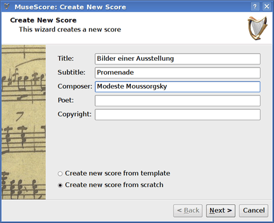
输入标题，作者或其它上面显示的信息，注意界面下方的两个选项：
- 从模板建立新乐谱
- 从头做起建立新乐谱
第一个选项提供了一些已经设置好的乐谱样本供选择，第二个选项提供全部乐器列表供选择。关于“模板”详见下面, 现在请先选"从头做起建立新乐谱"。
点击“下一步”继续。
乐器和人声部
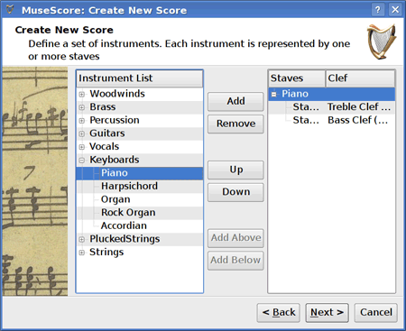
乐器列表窗口被分成两列，左边列出了所有可选的乐器及人声部，右边开始是空白的，手动选择乐器添加到这里。
左边列表中的乐器按照乐器组分类，双击一个分组可以显示全乐器族的所有乐器。选择并点击“添加”，所选的乐器会出现在右边列表中。如需要，可以添加更多乐器。
右边列表中乐器的顺序就是乐谱中的顺序。要改变，选择乐器名，点击"向上"、"向下"按钮可改变顺序。编辑好了点击""下一步"。
调号
如果你使用的是最新的稳定版，新建向导会提示选择调号，选择调号并点击"下一步"继续。
如果你使用的是 0.9.2 或更早的版本，向导不会提示选择一个 调号 ，可以忽略此步骤。
拍号，不完全小节，初始小节个数
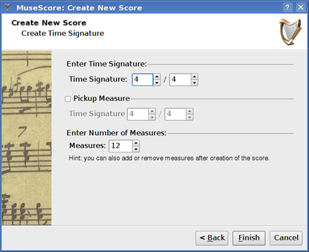
填写合适的拍号，如果你的乐曲由弱起小节开始，选中 "不完全小节" 复选框，调整不完全小节的拍号，以输入该小节正确的播放时值。
如果你大概知道需要多少个小节，可以在这里指定，或者也可以在后面编辑时添加。
点击"完成"按钮，创建了新的乐谱。
创建乐谱后的调整
向导里设置的任何项目都可以在创建后编辑时修改。
- 要添加或删除小节，或创建不完全小节，参见 小节操作
- 要修改任何文字，参见 文字 编辑。要添加一个标题或其它文字，点击菜单创建... → 文字 → 标题 (或其它文字)
- 要添加、删除或修改乐器的顺序，点击菜单创建... → 乐器....
模板
新建乐谱向导的第一个页面中有一个选项"从模板建立新乐谱" （详见 标题和其它文字 ）。选择该项，点击 "下一步" 继续。
下一个页面显示了一个模板列表，选择一个模板点击"下一步"，完成新建小节向导。
模板文件是一些普通的 MuseScore 文件，存放于 template 目录。用户可以自定义些模板文件，保存在 template 目录。在 Windows 平台下，template 目录通常位于 C:\Program Files\MuseScore 0.9\templates。在 Linux 下 如果通过包管理器安装，位于 /usr/share/mscore-xxx，如果用户自己编译安装 MuseScore，位于 /usr/local/share/mscore-xxx。在 Mac 平台下位于 /Applications/MuseScore.app/Contents/Resources/templates
使用基础
前述"开始"章节指导用户如何安装 和 创建一份新乐谱 的过程。"使用基础" 章将提供 MuseScore 的概述，并且描述操作乐谱的一般方法。
音符输入
音符输入操作在 音符输入模式，首先选择一个音符或休止符位置作为输入起点。音符输入时你总是在替换已有的音符或休止符，小节的时值不变。
- N：进入音符输入模式。
- Esc：离开音符输入模式。
进入 音符输入模式 后，用户选择音符面板上的按钮，切换要输入音符的时值，或使用时值对应的快捷键。
版本 0.9.4 之后的音符时值快捷键列表：
- 1：64分音符 (semi-demi-semiquaver)
- 2：32分音符 (demi-semiquaver)
- 3：16分音符 (semiquaver)
- 4：八分音符 (quaver)
- 5：四分音符 (crochet)
- 6：二分音符 (minim)
- 7：全音符 (semibreve)
- 8：二全音符 (breve)
- 9：长音符（四全音符）
- .: 句点为时值添加一个附点
0.9.3 或更早版本的音符时值快捷键由2个键组成：
- Alt+1：四分音符 (crochet)
- Alt+2：八分音符 (quaver)
- Alt+3：16分音符 (semiquaver)
- Alt+4：32分音符 (demi-semiquaver)
- Alt+5：64分音符 (semi-demi-semiquaver)
- Alt+6：全音符 (semibreve)
- Alt+7：二分音符 (minim)
- .：句点为时值添加一个附点
按 C D E F G A B C
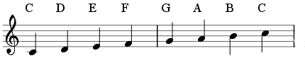 键可输入音符
按 Space 键可输入休止符：C D Space E。注意所选音符时值同时也是休止符的时值。
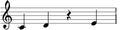
按住 Shift 键并输入一个音名添加音符为柱式音：C D Shift+F Shift+A E F
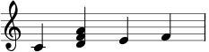
为音符增加一个附点的长度：5 . C 4 D E F G A （注：0.9.3 及更早版本使用不同的快捷键改变时值，见上面章节）
改变音符的八度位置使用下列组合键：
- Ctrl+Up （Mac： ⌘+Up）：音符的音高增加一个八度。
- Ctrl+Down （Mac： ⌘+Down）：音符音高减少一个八度。
其它编辑命令：
- x：翻转符干方向。
- Shift+x：沿符干翻转符头方向。
MIDI 键盘
0.9.4 及更新版本可同时在 Windows 或 Linux 平台下支持 MIDI 键盘输入， 0.9.3 或更早版本仅支持 Linux 系统下使用 MIDI 键盘。
- 连接 MIDI 键盘到计算机，打开 MIDI 键盘的电源。
- 启动 MuseScore
- 创建一个新乐谱
- 点击选择第一小节的休止符位置，作为输入音符的起点
- 按 N 键进入音符输入模式
- 选择一个音符时值，例如四分音符
- 在 MIDI 键盘上弹奏一个音，注意到音符已经添加到乐谱上
注：MIDI 键盘一次弹奏一个音符或一个柱式音，此音符输入通常叫做“步录输入”其实速度很快，也很可靠。有些制谱软件尝试实时的解析用户实时弹奏的音符并创建乐谱，但即使用户是一个专业的音乐家，结果往往并不稳定。MuseScore 只专注实现更可靠的音符录入方式。
Colors
0.9.5 及更新版本的 MuseScore 用黄色或红色颜色标记出音域范围之外的音符，在音域范围之上的音符显示黄色，在音域范围之下的音符显示红色。这些颜色是临时的，只出现在显示屏幕上，不会出现在打印乐谱中。如需禁止音符颜色标注，在 0.9.6 及更新版本中点击菜单 编辑 → 设置...，点击音符输入 分页，并取消复选框“音域范围之外的音符用颜色标记”。
外部链接
拷贝和粘贴
MuseScore 允许拷贝单个音符或较大的选择区域。 0.9.4 版包含了大量关于拷贝粘贴的改进，包括支持按住shift键选择的区域（非整小节）。 0.9.3 及更早版本仅能选择多个完整小节，并且易用程度不佳。（见 下面 ）。
拷贝
- 点击要选择的首个音符
- Shift+click 点击要选择的最后一个音符，出现一个蓝色的方框，高亮标识区域中所有元素。
- 点击菜单 编辑 → 拷贝
粘贴
- 点击要粘贴区域的首个音符或小节
- 点击菜单 编辑 → 粘贴
0.9.3 及更早版本的用法
拷贝
- 点击一个小节的空白处能够选中整个小节，出现一个蓝色方框高亮标记选择区域。
- 如需扩展选择区域，在另一个小节的空白处按 Shift+click。
- 点击菜单 编辑 → 拷贝
粘贴
- 点击要粘贴到小节的空白处
- 点击菜单 编辑 → 粘贴
编辑模式
在 编辑模式 中可以编辑许多元素：
- 按双击 一个元素：进入编辑模式
- 按Esc：退出 编辑模式
某些元素在编辑模式下会显示一些操作柄，可以使用鼠标或键盘拉伸或移动。
编辑模式 中的连句线 ：
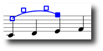
可用快捷键：
- Left：将操作柄左移 1 个谱线间距
- Right：将操作柄右移 1 个谱线间距
- Up：将操作柄上移 1 个谱线间距
- Down：将操作柄下移 1 个谱线间距
- Ctrl+Left （Mac： ⌘+Left）：：将操作柄左移 0.1 个谱线间距
- Ctrl+Right （Mac： ⌘+Right）：将操作柄右移 0.1 个谱线间距
- Ctrl+Up （Mac： ⌘+Up）：：将操作柄上移 0.1 个谱线间距
- Ctrl+Down （Mac： ⌘+Down）：将操作柄下移 0.1 个谱线间距
- Shift+Left：将操作柄的定位点左移（tick偏移）
- Shift+Right：将操作柄的定位点右移（tick偏移）
- Tab：跳转到下一个操作柄
小节操作
追加小节
在乐曲末尾添加小节，按 Ctrl+B （Mac： ⌘+B）。要追加多个小节点击菜单 创建 → 小节 → 追加多个小节...。
插入小节
选择一个小节，然后按 Ins 在选中小节前添加一个空白小节。要添加多个小节，点击菜单 创建 → 小节 → 插入多个小节...。
删除小节
选中一个小节，按 Ctrl+Del （Mac： ⌘+Fn+Backspace）。
0.9.5 及更早版本略有不同，按住 Ctrl （Mac： ⌘），同时点击一个小节的空白处，该小节由虚线标记出。按住 Ctrl+Click（Mac： ⌘+Click）以扩展选择区域，按 Del （Mac：Fn+Backspace）删除所选小节。
小节属性
鼠标右键点击一个小节的空白处，在弹出菜单中选择 小节属性...。
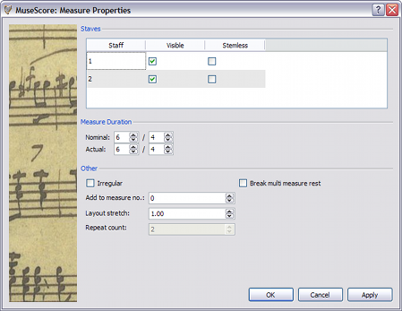
谱表
The 是否显示 属性用于切换显示或隐藏当前小节的音符和谱线。无符干的 属性用于切换显示或隐藏当前小节音符的符干。如果设置为无符干的，则当前小节那些本应有符干的音符，如二分音符或四分音符只显示符头。
时值
显示在乐谱上的拍号是一种标记的拍号，用户可以改变小节实际的 时值，而不管乐谱上显示的是什么。一般来说标记值和实际值是相同的，这也有例外，比如一个不完全（弱起）小节实际时值会短些。
下图中的四分音符弱起小节标记为 4/4 拍，但实际上是 1/4 拍。中间的几个小节标记和实际都是 4/4 拍，段落末尾小节内只有一个二分附点音符，它实际时值是 3/4 拍。
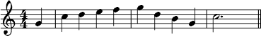
不完全小节
一个“不完全”小节不计入小节号计数，一般来说一个弱起小节被标记为“不完全小节”。如果使用 0.9.4 及以前版本标记一个小节为“不完全小节”，则需要在新版本中保存并重新打开乐谱，这样小节号的顺序才能正确显示。
反复次数
如果小节位于 反复记号 的末端（即右反复记号处），这里可以指定播放时反复的次数。
断开多小节休止符
该属性在当前小节处断开一个全小节休止符，这个选项应该在点击菜单样式 → 编辑一般样式...打开"创建多小节休止符" 选项 之前 设置选中。如果当前小节包含拍号 变化，则该值会自动选中。
在 0.9.6 以及更新的版本中，会自动在一些位置断开多小节休止，例如排练符号，拍号改变，双小节线等。
设置小节号
MuseScore 自动给每行首个小节显示小节号。如需其它方式，点击菜单 样式 → 编辑一般样式...。在左栏里选择"号码"，编辑右栏下方的 "小节号" 部分。
选中"小节号"旁的复选框打开自动小节编号功能。
选中"显示首个"复选框，给第一个小节显示小节号。
选中"所有谱表"复选框，小节号将出现在每一个谱表上，否则只有每行最上面那个谱表上显示小节号。
选中"每行显示"，则在每行谱表的首个小节上显示小节号；选中"间距"并指定小节个数，则每隔指定小节个数显示小节号，例如间隔是5就每隔5个小节显示小节号。
符号面板
要显示或隐藏符号面板，点击菜单 显示 → 面板。
用法：拖拽面板上的符号到乐谱元素上。
双击面板中的一个符号，等效于拖拽该符号到乐谱中的所有选中元素上。
例如同时为几个音符添加保持音记号：
- 选中一些音符
- 双击符号面板中 装饰音 & 演奏记号 下的保持音记号
撤消与重做
MuseScore 不限制撤销与重做的次数。
快捷键为：
- 撤消 Ctrl+Z （Mac： ⌘+Z）
- 重做 Ctrl+Shift+Z 或 Ctrl+Y （Mac： ⌘+Shift+Z）
或点击工具条按钮：
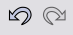
乐谱导出
点击菜单文件 → 另存为... 可将乐谱导出为下列格式：
- 压缩的 MuseScore 文件格式 (
*.mscz) - MSCZ 是标准的MuseScore 文件格式，建议绝大多数用户使用该格式。保存为此格式不会丢失任何信息，它其实就是压缩了的
.msc文件。 - MuseScore 文件格式 (
*.mscx) - MSCX 是未压缩的 MuseScore 文件格式，用于 0.9.5 及更新的版本。保存为此格式不会丢失任何信息，如果需要手动编辑文件内容建议使用此格式。更早的版本使用 MSC 作为扩展名，可惜 MSC 与 Microsoft Windows 系统相冲突，而且被一些邮件服务所屏蔽。新版的 MSCX 扩展名取代 MSC 后上述问题得以解决。
- MusicXML （
*.xml） - MusicXML 是音乐制谱行业的通用格式，用于现今大多数制谱软件中，包括 Sibelius、Finale 和其它 100 多个类似软件中。如需和其它制谱软件共享数据建议使用此格式。
- 压缩的 MusicXML (
*.mxl) - 压缩的 MusicXML 格式创建比普通 MusicXML 格式小很多的文件，压缩 MusicXML 格式是比较新的标准，在其它制谱软件中还未得到广泛的应用。
- MIDI (
*.mid) - Musical Instrument Digital Interface 音乐数字接口 （MIDI）是音序器或乐谱制作软件广泛支持的格式。由于 MIDI 格式的设计更多的是针对播放而不是制谱，所以它不包含乐谱排版、多声部、演奏符号、装饰音，或反复记号等许多信息。所以，要和其它制谱软件共享数据请用 MusicXML，需要一份播放数据请用MIDI。
- PDF (
*.pdf) - 便携文档格式（PDF）是和其它没有编辑需要的用户共享乐谱的理想格式，绝大多数计算机用户已经安装了 PDF 阅读器，他们无需安装特殊的软件就可以看到你的乐谱。
- PostScript (
*.ps) - PostScript (PS) 是一种非常流行的用于打印的页面描述语言。
- PNG (
*.png) - 便携式网络图形（PNG）是一种图像格式，它被所有主流操作系统所支持，在网络上非常流行。（它的优点是如果图像的颜色个数不多的话，文件尺寸会非常小）0.9.3 及更新的版本为多页乐谱的每一页保存一张 PNG 图片。
- SVG (
*.svg) - 可缩放矢量图形（SVG）可在绝大多数网页浏览器（Internet Explorer 即将加入）和大部分矢量图像编辑器中打开，遗憾的是大部分 SVG 编辑软件不支持内嵌字体，需要这些系统正确安装 MuseScore 字体。
- LilyPond (
*.ly) - LilyPond 文件格式使用 Lilypond 制谱软件打开，MuseScore 的当前版本中 LilyPond 的导出还未完全完成，处于开发阶段。
- WAV 音频格式 (
*.wav) - WAV（波形音频格式） 是微软和 IBM 联合开发的一种不压缩的音频格式，广泛用于 Windows、Mac OS 和 Linux 的软件中。由于没有音质损失，它是刻录音乐 CD 的理想格式，不过它的超大文件尺寸使得它很难通过邮件或网络传播。该格式存在于 0.9.5 或更新的版本中。
- FLAC 音频格式 (
*.flac) - 免费的无损音频编解码器（FLAC）格式是一种压缩的音频格式，FLAC 在不损失音质的情况下，文件大约是未压缩的一半大小。Windows 和 Mac 操作系统未提供 FLAC 格式的内建支持，需要安装 VLC 播放器 等软件来播放 FLAC 文件。该格式存在于 0.9.5 或更新的版本中。
- Ogg Vorbis (
*.ogg) - Ogg Vorbis 是一种用于取代 MP3 格式的无专利权音频格式。和 MP3 一样，Ogg Vorbis 文件尺寸比较小，大约是未压缩音频的十分之一，音质会有些损失。Windows 和 Mac 操作系统未提供 Ogg Vorbis 格式的内建支持，需要安装 VLC 播放器 或 Firefox 3.5 及更新的版本等软件来播放 FLAC 文件。该格式存在于 0.9.5 或更新的版本中。
制谱
在前面的 "使用基础" 章节我们学习了如何 输入音符 和使用 符号面板，"制谱" 这一章详细的描述了更多种乐谱制作操作，还包括一些高级制谱操作。
临时升降号
拖拽临时升降号面板上的符号到乐谱音符来添加或修改 临时升降号。
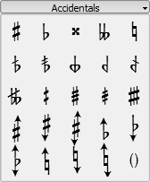
如果只想改变音符的音高，选中音符并按下：
- Up：音高增加一个半音。
- Down：音高降低一个半音。
- Ctrl+Up：音高增加一个八度。
- Ctrl+Down：音高降低一个八度。
MuseScore 自动为改变音高的音符配置合适的临时升降号，如需手动修正一个临时升降号或放置一个辅助升降号（带小括号的临时升降号），那么从符号面板中拖拽升降号到音符。如果在这之后又用线位置改变了音高，则之前这些手动修改操作会被清除。
菜单音符 → 音高修正 尝试为整个乐谱的音符猜测合适的临时升降号。
小节线
修改小节线类型
从小节线面板上拖拽一个小节线符号到乐谱中可改变小节线类型。
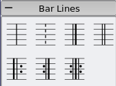
如需完全隐藏一个小节线，鼠标右键点击一个小节线，弹出菜单选择设置隐藏。
创建大谱表
如需延长小节线并跨越多个谱表，双击小节线并编辑。（见 编辑模式）。
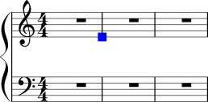
点击并拖拽蓝色方块（操作柄）到下一个谱表。
离开编辑模式后，所有小节线都刷新为贯穿谱表。
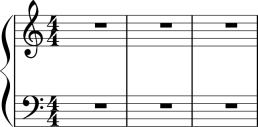
参见：小节操作
符杠
符杠 默认是自动添加的，它也可以手动修改。从符杠面板中拖拽一个符杠符号到音符，可以改变它的符杠样式。
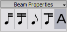
还可以先选中一个音符，再双击符杠面板中的符号。
作为符杠起点。
作为符杠中点。
不添加符杠。
该位置作为一个二级符杠的起点。
参见：跨谱表符杠
连谱号
删除
选中连谱号，按 Del
添加
拖拽连谱号面板中的一个连谱号到乐谱某一行的首个小节前。
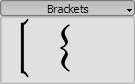
修改
拖拽连谱号面板中的一个连谱号到乐谱中某一个已有的连谱号位置。
水平位移
在0.9.4或更新的版本中允许调整连谱号的水平位置，双击连谱号，并按 Shift+Left 或 Shift+Right 左右移动。
编辑
双击一个连谱号进入 编辑模式，在 编辑模式 里可以上下拖拽操作柄，移动到谱表行的某个谱表上。
呼吸与停顿符号
要放置一个 呼吸符号，从呼吸符号面板中拖拽一个呼吸符号到乐谱音符，呼吸符号放置在音符之后。 在0.9.5或更早的版本中呼吸符号出现在拖拽到的音符位置之前。
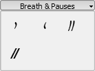
乐谱中的呼吸符号：
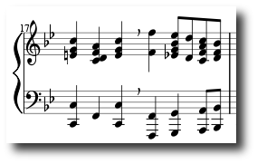
Caesura (informally called tram lines or railroad tracks) 操作方法相同，只在0.9.6或更新的版本中可用。
谱号
拖拽谱号面板中的谱号到一个小节位置可添加谱号，到一个已有谱号位置可修改谱号。按 F9 来显示或隐藏 符号面板。
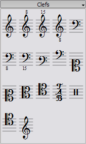
修改
除了拖拽符号面板中的一个谱号到乐谱，还可以从乐谱中拖拽谱号到乐谱中另一个谱号位置，需要按住Shift + click + 拖拽。
添加
拖拽符号面板中的谱号到一个小节的空白位置，可在小节起点创建变更谱号；拖拽谱号到一个音符处，创建一个小节中间的变更谱号。如果该小节不是首个小节，谱号会画的小一些。
移除
选择一个谱号，按Del键。
注意：改变谱号不会改变任何音符的音高，而只是移动音符位置。
跨谱表符杠
在钢琴谱中同时在两个谱表写作同一个乐句是很常见的，在 MuseScore 里可以这样操作：
先在一个谱表上输入所有音符：
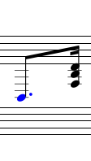
按Ctrl+Shift+Down 将选中音符移动到下一个谱表上 （Mac：⌘+Shift+Down。）
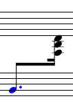
参见：小节线 关于跨谱表小节线（比如在大谱表上）。
鼓谱
鼓谱谱例：
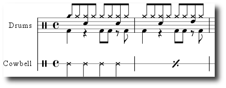
鼓谱中经常有同时发声的音符，它们的符干有向上的，也有向下的。如果还不熟悉多声部编辑，先参考 多声部 章节，下面的步骤是针对编辑鼓谱的。
MIDI 键盘
给乐谱添加鼓谱的最简单方式是使用 MIDI 键盘，很多 MIDI 键盘在每个琴键上标记了对应的鼓件符号。如果按下了高帽踏镲对应的琴键，MuseScore 会在乐谱上添加对应的鼓音符，软件能够自动指定符干方向和符头类型。
鼠标
鼠标输入鼓音符的功能在 0.9.4 或更新的版本中提供。
- 在鼓谱表中选择一个音符或休止符，这样会在符号面板中加载对应的鼓组面板。
- 按N进入音符输入模式
- 在音符输入工具条中选择一种音符时值
- 在鼓谱符号面板 中选择一种音符类型（例如低音大鼓或小军鼓）
- 点击鼓谱添加音符
倚音
短倚音 (Acciaccatura) 的样子是一个较小的音符，符干中间被一条斜线穿过，长倚音 (Appoggiatura) 不带那条斜线，它们都位于普通音符的前面。
拖拽倚音 符号面板 （在0.9.5及更早的版本中它叫做音符）上的符号到乐谱中的音符上，可以创建倚音。
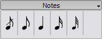
参见：维基百科 倚音
音量渐变符号
音量渐变符号 属于 线条符号 符号。要创建一个音量渐变符号先选中一个音符作为起点。
- H：创建一条渐强线
- Shift+H：创建一条渐弱线
也可以从音量渐变符号面板拖拽一条线到一个符头。
- H 创建一条渐强线:
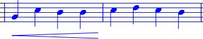 - 双击 切换到 编辑模式：
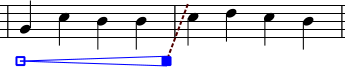 - Shift+Right 移动末尾定位点：
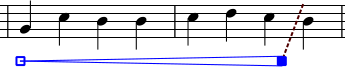 - Right 移动末尾定位点：
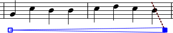
调号
拖拽调号面板上的符号到一个小节或一个已存在的调号位置来创建或修改 调号。
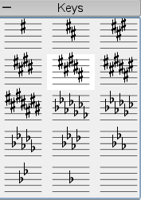
F9 切换 符号面板 窗口。
修改
可以从符号面板上拖拽一个调号符到乐谱，还可以在乐谱中拖拽一个调号到另一个调号位置，按住Shift+click+拖拽。
添加
从符号面板拖拽一个调号到一个小节的任意位置，可在该小节起点创建调号。
移除
选择一个调号，按 Del。
线条符号
线条面板 和其它 符号面板 一样，通过拖拽方式工作。使用鼠标拖动面板上的符号，拽到乐谱中。
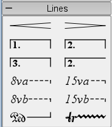
修改长度
如过通过鼠标编辑改变一个线条符号的长度，它的定位点（定位的音符或小节）并不改变。下面方法用于调整一个线条元素的起点或终点定位位置。
- 如果处于 音符编辑模式，按 N 退出。
- 双击要编辑的线条
- 使用下列快捷键移动操作柄：
- Shift+Right 将操作柄右移一个音符
- Shift+Left 将操作柄左移一个音符
- 如果仅仅要改变线条长度，不改变线条定位的音符或小节位置，使用下列快捷键：
- Right 将操作柄右移一个单位
- Left 将操作柄左移一个单位
全小节休止
小节休止符
如果小节内一个音符都没有，则出现全小节休止符。
要创建全小节休止符，选中小节，按 Del，则小节内的所有音符和休止符都被一个全小节休止符替换。
多小节休止符
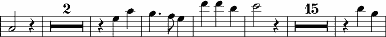
多小节休止符标明某件乐器的一段较长时间的休止，通常用于弦乐谱中。在 0.9.5 或更早的版本中该功能有限制（见下文"局限"）。
操作步骤
- 点击菜单 样式 → 编辑一般样式 (在 0.9.5 或更早的版本中它称作 样式 → 编辑样式)
- 点击"乐谱"标签页
- 选中 "创建多小节休止" 复选框
局限
0.9.5 及更早的版本不能自动在特殊的位置处断开多小节休止符，如双小节线，调号，排练符号等。该功能在即将发布的 0.9.6 版本中已经修正。老版本的变通方法见 小节操作 中的"断开多小节休止" 部分。
该样式选项自动为整个乐谱创建多小节休止符，建议先输入所有音符，再打开该选项。
反复记号
简单反复记号可通过编辑 小节线 设置。跳房子的操作步骤见 数字结尾，跳房子。
播放
必须确保播放工具条上的 "播放反复" 按钮被选中，才能在播放时听到反复记号起作用。不选该项则播放时反复不起作用。
在反复记号的末尾小节处可以设置 "反复次数" 属性 来自定义播放次数。
文字
反复文字记号，如"D.C. al Fine" 或 "D.S. al Coda" 位于反复记号 符号面板。
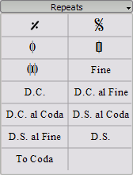
连句线
连句线 是两个或更多个音符之间的一条曲线，用于标记这些音符需要连奏。如需连接两个相同音高的音符，见 连音线
操作步骤
- 退出 音符输入 模式，选中一个音符作为起点
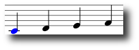 - 按S 创建一条连句线
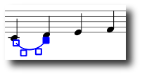 - 按Shift+Right 移动连句线的终端到下一个音符
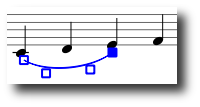 - 按X 翻转连句线的方向
- 按Esc 退出连句线编辑模式
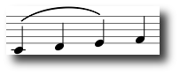
调整
上述步骤2-4中的操作柄可用鼠标移动，外面的两个操作柄用于调整连句线的起点，中间的两个操作柄用于调整连句线的形状轮廓。
一条连句线可跨越多个谱表组或页面。连句线的起点可定位于一个音符、柱式音符或休止符，如果由于排版刷新、拉伸或样式变化导致音符位置的变动，连句线也会跟着调整移动。
注： 不能使用鼠标改变连句线的起点或终点定位音符，而要使用快捷键 Shift + ← 或 → 方向键来调整定位点。
虚连句线
有时使用虚连句线表示一个乐句需要保持，或者与原作者的标记不同，乐谱的编辑者有时要添加演奏建议标记。要将现有连句线改为虚连句线，鼠标右键点击它，弹出菜单选连句线属性...，在连句线属性对话框中可以选择实线或虚线。
连音线
连音线 是一条连接两个音高相同音符的曲线，如需连接多个不同音高的音，见 连句线。
方法一
选中第一个音：
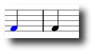
按+ 创建一条连音线：(在0.9.3或更早的版本中快捷键是 Shift+S)
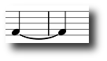
方法二
如需在 音符输入 模式中添加连音线，在连音线起点音符处按 +。 在 0.9.3 或更早的版本中必须在输入第一个音符之前按 +。
拍号
在符号面板中可找到 拍号 ，拖拽拍号到乐谱（操作方法见 符号面板）。
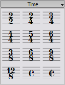
如果需要的拍号未在符号面板中列出，点击菜单 创建 → 拍号... 在弹出窗口中自定义，填写创建拍号 区域的分子和分母部分。
大多数情况下用户只需编辑分子的数字，上面额外的数字用于 additive meters，数字间添加 “+” 符号。
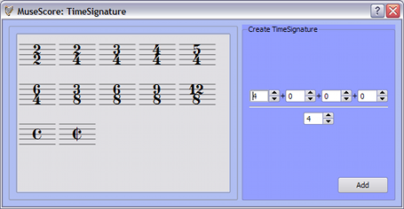
不完全小节
有的时候小节的实际时值和拍号记录的时值不同，弱起小节（不完全小节）是一种常见的例子。要改变小节的实际设置而不动显示的拍号，见 小节操作 的"属性"部分。
震音
震音是快速的重复一个音，或快速的在两个或多个音之间切换，它用穿过符干的短斜线表示。如果是两个或多个音之间的震音，则把线条画在它们之间。
震音符号面板包含了针对单音（符号上有符干），和针对双音（符号上没有符干）的符号。
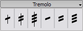
在双音震音中，每个音符都弹奏整个震音的时值。要输入一个二分音符震音，先输入两个普通 的四分音符，然后拖拽震音符号到第一个音上，音符的时值类型会自动应用到两个音上。
多连音
要新建一个 三连音，先输入一个整个三连音时值类型的音符，选择该音符，按 Ctrl+3 将它变为一个三连音。类似的，按 Ctrl+5 将它变为一个五连音。
先选中一个音符：
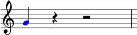
按Ctrl+3 创建一个三连音：
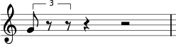
再进行编辑
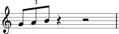
音符输入模式
连音符在 音符输入 模式中的输入方式和上面的有所不同，在 0.9.5 及更新的版本中必须先选择时值，然后输入音高。下面是添加八分音符三连音的具体步骤：
- 进入音符输入模式
- 确认输入光标在要添加连音符的起点位置，使用左右方向键调整
- 在音符输入工具条上选择四分音符时值，作为整个连音符的时长。
- 点击菜单音符 → 连音符 → 三连音 指定连音符类型
- 注意到工具条上自动选中了八分音符时值，点击乐谱添加音高
属性
要改变一个连音符的显示属性，右键点击连音符，在弹出菜单中选择 连音符属性...。
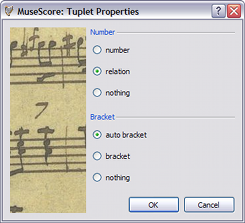
属性对话框的编号部分用于设置显示一个数字，两个整数的比例关系，或不显示数字。
在"方括号"部分，"括号" 和 "无" 用于手动控制连音符括号的显示。"自动括号" 选项隐藏了带符杠音符的方括号，为不带符杠的音符显示方括号。
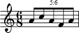
多声部
多声部 功能允许用户在一个单独谱表上记录起点相同，时值不同的音符。多声部在其它制谱软件中也叫做"多层"。
操作方法
- 首先输入最上方声部的音符，即符干向上的音符。
- 输入音符时，有些音符符干可能是向下的，如果在 0.9.4 及更新的版本中，用户此时无需关心符干方向，它们会在输入第二个声部时自动翻转。
- Version 0.9.3 only: 如果在 0.9.3 或更早的版本中，用户需要手动翻转符干向下的音符，选中音符后点击工具条的 "翻转方向" 按钮或按 X 键。
- 现在选中第一个音符，将光标移动到行首。
- 点击 "声部 2" 按钮 并输入下方声部的音符（符干都向下）
- 仅在 0.9.3 版中： 如果使用 0.9.3 或更早的版本，用户需要手动翻转符干，按 X 键或翻转方向按钮
- 完成时看起来应该是这样：
何时使用多声部
- 如在单谱表同一柱式音符内，符干需要指向不同的方向。
- 如在单谱表内，需要同时演奏时值不同的音符时。
隐藏的占位休止符
要隐藏一个休止符，右键点击它，在弹出菜单中选 设置隐藏，如果菜单 显示 → 显示隐藏元素 是选中状态，休止符在显示屏上仍然是显示的。在打印的乐谱中隐藏的休止符不会出现。
数字结尾，跳房子
数字结尾 的方括号或 第一段结尾/第二段结尾 的方括号用于标记反复后的不同结尾。
从 线条面板 中拖拽一个元素到乐谱来放置一个数字结尾的方括号。
该方括号可以跨越多个小节，双击它进入 编辑模式 移动操作柄：
- 向右一个小节 Shift+Right
- 向左一个小节 Shift+Left
这些命令移动数字结尾的“逻辑”端点位置，决定结尾小节个数。
编辑模式 中的其它命令可以移动操作柄，但不会影响反复记号的播放。
在移动操作柄时，从逻辑位置到实际位置之间会显示一条虚线
文字
用户可使用线条属性对话框修改数字结尾的文字或其它一些属性，右键点击一个数字结尾的方括号，弹出菜单中选择 线条属性...，如果使用 0.9.3 或更早的版本选择 "数字结尾属性..."，下图显示了数字结尾文字 "1.-5."。
播放
有时反复记号会播放多余两次，上图中的数字结尾文字标记了需要播放五遍该段落。如需改变播放次数， 到包含右反复记号的小节中，修改它的 "播放次数" （详见 小节操作 ）。
多谱表乐谱的问题
在 0.9.4 或更早的版本中，只能把数字结尾放在多谱表乐谱的顶部谱表上，否则就会在添加谱表时遇到程序崩溃的错误（见 错误报告），或在重新加载乐谱时发现光标在乱动。
外部链接
声音与播放
MuseScore 内建了发声与播放的功能，本章涵盖了有关播放控制和扩展内建的钢琴音色，增加更多乐器音色的方法。
播放模式
MuseScore 内部有一个音序器（Midi播放器）用于播放乐谱。
按下播放 按钮后进入 播放模式，在播放模式 中下列有命令可用：
- 跳到前一个音 Left
- 跳到下一个音 Right
- 跳到前一个小节 Ctrl+Left
- 跳到下一个小节 Ctrl+Right
- 退回到乐谱的起点 Home
- 切换显示播放面板 F11
再次按下播放按钮，停止播放并退出 播放模式。
MuseScore 从上次暂停的位置开始播放，如果用户选中了一个音符，则程序从该音符位置开始播放。工具条按钮“退回”用于跳转到乐谱开始处准备播放。
播放面板
播放面板上有更多的播放控制功能，包括速度调节、起点位置跳转、音量调整。点击菜单 显示 → 播放面板 可打开显示播放面板。
错误排除
只有钢琴的声音
在 0.9.5 或更早的版本中： 如需播放钢琴以外的乐器，用户必须使用菜单 编辑 → 设置... → 输入/输出 页面 设置中选择一个更完整的音色库（SoundFont），详见 SoundFont 音色库。
Ubuntu 系统的发声
如果用户的 Ubuntu 系统发声有问题，那么建议用户升级到 0.9.5 或更新的版本，获取最新版本软件的说明在软件下载页面中。如有问题请到论坛提问。
SoundFont 音色库
MuseScore 自带了一个钢琴音色用于播放。如需更多的乐器声音，例如小提琴或鼓，你需要一个完整的 GM MIDI 音色库（SoundFont）。
概述
一个音色库能够保存任意个数的乐器，在网络上可以找到很多音色库文件下载，需要寻找那种包含全部 128 种 通用 MIDI (GM) 乐器的音色库。如果你使用了不兼容通用 MIDI 标准的音色库，可能会造成保存的 Midi 文件共享给其他人后听不到某些乐器声音的情况。
网络上现存的音色库文件尺寸和音色质量各异，一般文件大的音色库有更好的音质，但可能由于太大不能在用户的电脑上成功加载。如果用户在加载一个较大的音色库后发现 MuseScore 运行缓慢，或播放时断断续续，则需要换一个小点的音色库文件。下面列出三种常见的音色库：
- FluidR3_GM.sf2 (未压缩大小 141 MB)，下载 Fluid-soundfont.tar.gz (129 MB)
- MagicSF_ver2.sf2 (未压缩大小 67.8 MB)，见 Big SoundFonts
- TimGM6mb.sf2 (未压缩大小 5.7 MB)，见 Tim Brechbill's Timidity++ Download Site "Free SoundFont" 部分
压缩
SoundFont 尺寸通常较大，它们常常被压缩为.zip、.sfArk 和 .tar.gz 格式的形式，用户需要在使用前解压缩这些文件。
- ZIP 是一种标准的文件压缩格式，大多数操作系统都支持。
- sfArk 是一种专门用来压缩音色库文件的格式，使用专门的软件 sfArk 软件 来解压。
- .tar.gz 是 Linux 下常用的压缩格式，Windows 用户可用 7-zip 解压，它支持很多种压缩格式。注意需要解压缩两次，一次解压 GZip文件，另一次解压 TAR 文件。
MuseScore 设置
获取并解压缩音色库文件后，不能通过双击打开它并设置MuseScore。把它移动到合适的目录下，启动 MuseScore，并按如下操作：
点击菜单 显示 → 软件合成器， 如果使用 0.9.5 或更早的版本，点击菜单 编辑 → 设置... → 输入/输出 页面。
默认的音色库是 :/data/piano1.sf2，用新的新时空文件代替它，点击“打开”按钮定位并打开该文件。
点击“确定”退出设置对话框，关闭并重新运行 MuseScore 以使改变生效。
错误排除
如果播放工具条处于不可见或不能操作状态，做如下操作：
- 确认菜单 显示 → 播放 处于勾选状态，点击该菜单项切换这个勾选状态。如果本步骤没有解决你的问题请看下一步。
- 如果在改动音色库后播放面板未显示，点击菜单编辑 → 设置... → 输入/输出 页面，不做任何改动直接点击"确定"。再次启动 MuseScore 后播放面板应该显示了，这是一个 0.9.3 或更早版本的已知问题。
如果用户是首次设置一个音色库，建议使用上面列出的音色库文件。
速度
可通过播放面板和乐谱中的速度记号改变播放速度。
播放面板
- 显示播放面板：点击菜单显示 → 播放面板
- 拖动速度滑动条改变每分钟拍数。
速度记号
- 选中一个音符，作为添加速度记号的位置
- 点击菜单：创建 → 文字... → 速度...
- 按 确定 按钮完成
注意在 0.9.3 或更早的版本中，不能在速度记号对话框里修改速度记号或每分钟拍数，只能在乐谱中添加速度记号后改变。
已有的速度记号可双击后进入 编辑模式 修改，用户可按 F2 打开文字编辑 面板添加一个四分音符或其它时值的音符作为速度记号的节拍标记。
现有速度记号的每分钟拍数（BPM）可通过右击文字，在弹出菜单中选择 速度属性... 来修改。
注意：如果播放面板中的速度设置如果不是 100%，速度记号的播放会和速度记号设置中的BPM值不一样。
调节音效
混音器
混音器用于改变乐器声音和调节音量、声像、混响合唱效果等。点击菜单显示 → 混音器 显示混音器。
静音和独奏
点击 静音 复选框可以立刻静音某个谱表，可以点击 独奏 复选框可使其它谱表静音，只播放标记为独奏的谱表。
拨盘
要顺时针转动拨盘点击并向上拖拽鼠标，要逆时针转动拨盘点击并向下拖拽鼠标。
音色
音色下拉菜单中列出了当前 SoundFont 音色库 包含的全部乐器音色，该功能不支持 0.9.4 或更早的 Windows 版本，在 0.9.5 版中改正。
谱表中的变换
MuseScore 中某些乐器可在乐曲中间变化音色，比如弦乐器可切换为拨奏或震音，小号可切换为弱音小号。下面步骤用弱音小号举例，同样方法也适用于拨弦或震音弦乐。
- 选中弱音段落的第一个音符
- 点击菜单 创建 → 文字 → 谱表文字
- 输入 Mute (或同功能文字如 Con Sordino)，这里的谱表文字只是阅读需要，不会影响播放。
- 右击谱表文字，弹出菜单中选择 谱表文字属性...
- 在谱表文字属性对话框中，选中 通道 复选框
- 在谱表文字属性对话框中，选中 mute
- 点击 确定 按钮返回乐谱
现在谱表文字后面的所有音符都是弱音了，如果之后要恢复音效为非弱音的，按上面步骤操作即可，步骤 3 中要输入 Open，并在步骤 6 中选择 normal。
文字
前一章中描述了关于 速度标记|影响播放速度的文字，除此以外 MuseScore 还有很多种类型的文字。歌词， 和弦，力度记号，指法，标题栏等等。它们都可在主菜单创建 → 文字中找到。
更普通的文字请用谱表文字或谱表行文字，这两种文字的区别是作用于单一的谱表还是作用于整个谱表行。
文字样式
文字样式控制着添加文字的属性，该样式定义了文字的初始属性。
文字属性：
- 字体：字体的名称，如 "Times New Roman" 或 "Arial"
- 大小：以磅（point）为单位的字体大小
- 斜体，粗体，下划线：字体属性
- 定位点：页面，时间位置，符头，谱表行，谱表
- 对齐方式：水平方向：居左，居右，居中；垂直方向：顶部，底部，居中
- 偏移：相对于定位点的偏移量
- 偏移单位：毫米，线间距，页面百分数
文字类型：
文字编辑
双击文字进入编辑模式：
在文字的 编辑模式 中，下列操作可用：
- Ctrl+B Mac: ⌘+B) 切换 粗体
- Ctrl+I (Mac: ⌘+I) 切换 斜体
- Ctrl+U (Mac: ⌘+U) 切换 下划线
- Up 在下标模式中开始或结束下标
- Down 在下标模式中开始或结束下标
- 移动光标：Home End Left Right
- Backspace 移除光标左边的字符
- Delete 移除光标右边的字符
- Return 换行
- F2 显示字符面板，用于输入特殊的文字和符号。
字符面板:
和弦
选中一个音符后按 Ctrl+K输入和弦名称，此操作为选中音符添加了一个和弦名称文字对象。
- 按 Space 移动到下一个音符位置。
- Shift+Space 移动到前一个音符位置。
- Ctrl+Space 为和弦名称添加空格。
和弦名称可以当作普通文字 编辑，要添加升记号输入# ，要添加降记号输入 b。这些字符会在切换到下一个音位置时自动显示为正确的升降号。
Jazz 字体
如用户喜欢手写体的和弦文字，在 0.9.5 或更新的版本中包含了 jazz 字体供选择。
- 点击菜单 样式 → 编辑一般样式...
- 左栏中选择 和弦名称
- 右栏将文字 chords.xml 替换为 jazzchords.xml
歌词
- 首先输入音符
- 选中首个音符
- 按 Ctrl+L 并为首个音符输入歌词
- 在当前歌词末尾按 Space 跳到下一个音符
- 在音节后面输入连字符 - 跳到下一个音符，音节间由虚线连接。
- Shift+Space 跳到前一个音符
- Enter (Mac: Return) 跳到下一段歌词
歌词音节（常见于西方语言）可用下划线扩展：
输入：soul, _ _ _ To Esc。
特殊字符
除了极个别几个字符，歌词与普通文字 编辑 方式相同。如需给音节输入空格、连字符或下划线，请用下列快捷键：
- Ctrl+Space (Mac: ⌥+Space) 输入一个 空格
- Ctrl+- (Mac: ⌥+-) 输入一个连字符 (-)
- 仅 Mac 系统：⌥+_ 输入下划线 (_)
排版格式化
换行符与占位符
拖拽换行符面板上的对应符号到乐谱小节空白处可添加 换页符 或 换行符 （谱表组换行符），标记的小节后面执行换行。绿色的换行符在显示屏幕上可见，但不会出现在打印乐谱中。

占位符 用于增加相邻两个谱表的间距。拖拽占位符到要增加垂直间距的小节上方，双击它并拖动操作柄调整占位符的高度。
如需调整乐谱所有谱表间的距离，请编辑乐谱一般样式，占位符只做局部调整用。
占位框
占位框 为普通小节间添加空白区域，它可以容纳文字或图片，MuseScore 有两种占位框：
- 水平占位框
水平占位框用于断开一行谱表组，它的宽度可以调整，它的高度等于谱表组高度。水平占位框可用于分开歌曲段落与尾声。- 垂直占位框
垂直占位框在谱表组前面或中间添加空白区，它的高度是可以调整的，它的宽度等于谱表组行的宽度。垂直占位框可用于放置标题、副标题、作曲等信息。如果用户添加了标题，首个小节前会自动放置一个垂直占位框。
创建一个占位框
首先选中一个小节，在菜单 创建 → 小节下面可找到占位框操作，占位框被添加到该小节之前。
删除一个占位框
选中一个占位框，按 Del。
编辑占位框
双击一个占位框进入 编辑模式，拖拽出现的操作柄可改变占位框的大小。
编辑模式下的编辑占位框：
技术支持
本章描述了关于如何获取 MuseScore 帮助的问题，查找的位置，在论坛上提问的方式，报告软件错误（bug）的小技巧。
如何报告软件错误及寻求支持
在 论坛 上提问前：
当您提出功能需求或报告软件错误时，请尽量详细的添加下列信息：
- 所用的 MuseScore 版本信息，例如 0.9.5 版，或预览版的版本号，例如修订版 1944。
- 运行的操作系统信息，例如 Windows Vista，Mac OS 10.5 或 Ubuntu 9.04。
- 如要报告软件错误，请详细描述能够重现错误的操作步骤，比如点击了哪里，按了哪些键，看到了什么等。如果您也不能通过这些步骤重现错误，则开发者也无法通过这些步骤不能重现该错误，也就无法改正。
- 为每一个错误写一个错误报告。
- 请注意：错误报告的目的不仅是为了突显问题，而且是为了让其它人更容易的重现并解决它。
如何恢复到安装时的默认状态
最近版本的 MuseScore 添加了恢复到默认状态或称为"工厂设置"的选项，如果您的设置乱套了该功能会很有用。这种事情发生的机会并不多，所以您可以先到论坛询问，可能不需要恢复所有设置就可以解决您的问题。
警告： 恢复到“工厂设置”将覆盖您手动修改的所有设置，包括设置对话框，符号面板等。
Windows 下的操作步骤
- 如果 MuseScore 正在运行，需要先退出运行。
- 按 Windows 窗口键+R 打开"运行"对话框， Windows 窗口键 是带有 Windows 标志的键。
- 点击 浏览...按钮
- 在您的计算机上查找 mscore.exe 文件，该位置由您的软件安装位置决定，一般在 我的电脑 > 本地磁盘 C > Program Files > MuseScore > bin > mscore.exe
- 点击 打开 按钮退出 "浏览" 对话框，返回"运行"对话框时，"运行"对话框里会显示类似的文字：
"C:\Program Files\MuseScore\bin\mscore.exe" - 点最后的引号那里，添加： -F，就是
"C:\Program Files\MuseScore\bin\mscore.exe -F" - 点击确定按钮
几秒钟后 MuseScore 会启动，所有的设置恢复到“出厂状态”。
Mac OSX 下的操作步骤
- 如果 MuseScore 正在运行，需要先退出运行。 (⌘+Q)
- 打开程序 Applications/Utilities/Terminal，显示一个终端窗口
- 输入或拷贝下面文字到终端窗口（包括最左边的 '/' 字符）：
/Applications/MuseScore.app/Contents/MacOS/mscore -F
MuseScore 的所有设置恢复到出厂状态，并打开 MuseScore 窗口，现在可以退出终端并继续使用 MuseScore。